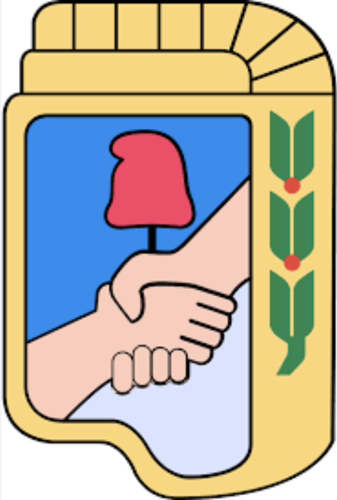

Presentación del Proyecto
Propuesta Territorial 2027
PJ Lomas de Zamora

Plan Sistémico de Despliegue Territorial
PJ Lomas de Zamora
I. Marco Político: El Partido como Brazo Ejecutor
No concebimos la política sin territorio, ni la gestión sin organización. Este proyecto no es solo una herramienta estadística; es el mapa de ruta para consolidar al Partido Justicialista como el brazo político del Gobierno de la Comunidad. Nuestra misión es clara: transformar el flujo de información en fuerza militante, garantizando que cada política pública llegue a quien la necesita, casa por casa.
Consolidación de la Musculatura Base (Los 42k)
El despliegue inicia hacia adentro. Antes de la expansión, ejecutaremos la Revalorización de la Tropa: un relevamiento técnico y afectivo de nuestros 42.371 afiliados. No buscamos un padrón estático, sino una fuerza orgánica activa. Cada afiliado debe ser el primer sensor de la gestión en su cuadra, el nexo directo entre el vecino y el Estado municipal.
Ofensiva Territorial – El Escudo AM
El análisis de datos identifica un nicho crítico y prioritario: el 25% del padrón electoral, compuesto por nuestros Adultos Mayores. Ante la crueldad del modelo nacional, nuestra respuesta es la cercanía total:
- Plan Pasquín: Un boletín impreso de alta penetración que sintetiza pedagógicamente el despojo de derechos perpetrado por el gobierno de Milei.
- Militancia de Cercanía: Despliegue puerta a puerta y presencia diaria en los Centros de Jubilados. Recuperamos el contacto humano para organizar la esperanza y la resistencia.
Soberanía y Arraigo
IV. Fase 3: Una vez aceitada la maquinaria con nuestros mayores, escalaremos el modelo hacia el tercer nicho en volumen: la Comunidad de Migrantes. Implementaremos un Censo Integral de Residencia y Arraigo. El objetivo es doble: verificar la presencia efectiva en el territorio y garantizar que el PJ sea el garante de los derechos de quienes eligen Lomas de Zamora para vivir, trabajar y soñar.
V. Conclusión Estratégica: De la Segmentación a la Victoria
Este plan utiliza la Clusterización y la analítica avanzada para que la militancia no camine a ciegas. Optimizamos el esfuerzo del compañero para que cada visita tenga un propósito y cada reunión un resultado. Estamos construyendo una maquinaria electoral invencible, donde la tecnología potencia la lealtad y el dato fundamenta la doctrina.
Total Afiliados PJ
42.371
Composición Femenina
58%
Piso Electoral 10x
150.000
Comportamiento Afiliados (Sept vs Oct)
El 59.5% votó en ambas, pero un 21.9% no votó en ninguna.
Estrategia de Crecimiento
Fidelizando al 50% de nuestros votantes afiliados (15k) y logrando que cada uno sume 10 referidos, construimos un piso sólido.
Plan Pasquín: Adultos Mayores
Mensaje anti-Milei y penetración en centros de jubilados.
Distribución de Voto AM
Censo Integral Migrante
Depuración del padrón para consolidar el bastión.
Voto Favorable (Sept)
62.87%
"Obtuvimos 11.953 votos migrantes".
Participación Migrante
28.48%
Hay un enorme potencial de crecimiento.
El Método de Precisión
Datos Demográficos: Variables duras (edad, género, barrio).
Comportamentales: Si votaron, si son afiliados.
Socio-Afines: Migrantes, centros de jubilados.
// LÓGICA PREDICTIVA 2027
# Meta: Padrón 600K electores
Fase 1: Tabla Maestra de Features
Fase 2: Ejecución Algoritmo Matemático
Fase 3: Interpretación Estratégica Humana
"De la segmentación a la predicción"
Conclusiones Estratégicas
La propuesta aquí presentada no es solo un despliegue de métricas; es la hoja de ruta para la construcción de una mayoría irreversible. En un tiempo donde la incertidumbre domina el escenario nacional, Lomas de Zamora tiene la oportunidad y la responsabilidad de consolidar un modelo donde la gestión y el partido sean una sola fibra al servicio del pueblo.
Este plan estratégico cierra el círculo entre la ciencia de datos y la lealtad territorial. Al sistematizar el contacto con nuestros 42.000 afiliados, al proteger activamente a nuestros adultos mayores del ajuste nacional y al censar con precisión a nuestra comunidad migrante, estamos haciendo mucho más que una campaña: estamos devolviendo al Partido Justicialista su rol de escudo de los humildes y motor de la comunidad organizada.
Bajo la conducción de Daniela Vilar, este esquema de trabajo garantiza que cada esfuerzo militante sea quirúrgico y que cada mensaje llegue al corazón de la demanda vecinal. No caminamos a ciegas; lo hacemos con la certeza que nos dan los datos y la pasión que nos dicta la doctrina.
Lomas de Zamora será el bastión donde la tecnología potencie la política
Y donde la organización venza al tiempo. Es momento de transformar la información en poder popular y la segmentación en victoria estratégica.
"Primero la Patria, después el Movimiento y luego los hombres y mujeres que, con lealtad y organización, garantizaremos la grandeza de Lomas."